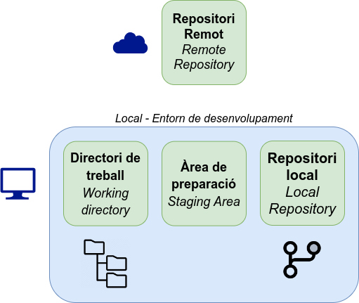
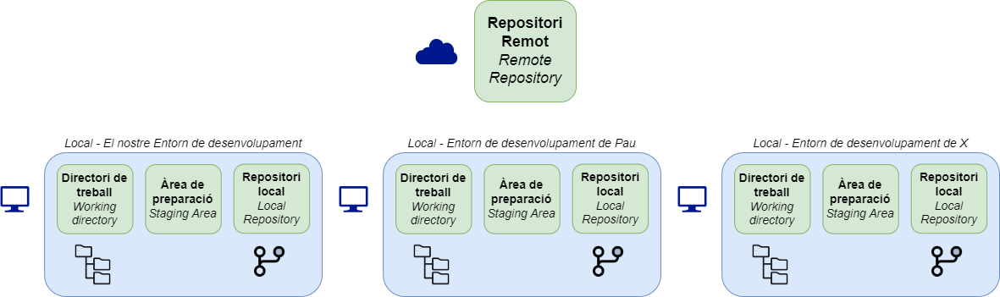

<!doctype html>
<html>
<head>
    <meta charset="utf-8">
    <meta name="viewport" content="width=device-width, initial-scale=1.0, maximum-scale=1.0, user-scalable=no">
    <!-- Page description -->
    

    <!-- Page author -->
    
        <meta name="author" content="Joan Puigcerver Ibáñez" />
    

    <!-- Canonical -->
    
        <link rel="canonical" href="https://joapuiib.github.io/curs-git/apunts/03_remots/transparencies_auth/" />
    

    <!-- Favicon -->
    <link rel="icon" href="../../../assets/images/favicon.png" />

    <!-- Site title -->
    
      
        <title>Transparències: Mètodes d'autenticació a GitHub - Introducció a Git i la seua aplicació a l’aula</title>
      
    

    
        <link rel="stylesheet" href="https://unpkg.com/katex@0/dist/katex.min.css">
        <link rel="stylesheet" href="https://cdnjs.cloudflare.com/ajax/libs/reveal.js/5.1.0/reveal.min.css">
        <link rel="stylesheet" href="https://cdnjs.cloudflare.com/ajax/libs/reveal.js/5.1.0/reset.min.css">
        <link rel="stylesheet" href="https://cdnjs.cloudflare.com/ajax/libs/reveal.js/5.1.0/plugin/highlight/monokai.min.css">
        <link rel="stylesheet" href="https://cdnjs.cloudflare.com/ajax/libs/reveal.js/5.1.0/theme/white.min.css">
        <link rel="stylesheet" href="../../../stylesheets/slides.css">
    

    <!-- Meta tags from front matter or plugins -->
    
      
        <meta
          
            property="og:type"
          
            content="website"
          
        />
      
        <meta
          
            property="og:title"
          
            content="Transparències: Mètodes d'autenticació a GitHub - Introducció a Git i la seua aplicació a l’aula"
          
        />
      
        <meta
          
            property="og:description"
          
            content="None"
          
        />
      
        <meta
          
            property="og:image"
          
            content="https://joapuiib.github.io/curs-git/assets/images/social/apunts/03_remots/transparencies_auth.png"
          
        />
      
        <meta
          
            property="og:image:type"
          
            content="image/png"
          
        />
      
        <meta
          
            property="og:image:width"
          
            content="1200"
          
        />
      
        <meta
          
            property="og:image:height"
          
            content="630"
          
        />
      
        <meta
          
            property="og:url"
          
            content="https://joapuiib.github.io/curs-git/apunts/03_remots/transparencies_auth/"
          
        />
      
        <meta
          
            name="twitter:card"
          
            content="summary_large_image"
          
        />
      
        <meta
          
            name="twitter:title"
          
            content="Transparències: Mètodes d'autenticació a GitHub - Introducció a Git i la seua aplicació a l’aula"
          
        />
      
        <meta
          
            name="twitter:description"
          
            content="None"
          
        />
      
        <meta
          
            name="twitter:image"
          
            content="https://joapuiib.github.io/curs-git/assets/images/social/apunts/03_remots/transparencies_auth.png"
          
        />
      
    

</head>

<body>

    
    <div class="reveal">
      <div class="header">
        <a href=".?print-pdf" class="header__item" target="_blank">
          <svg xmlns="http://www.w3.org/2000/svg" viewBox="0 0 512 512"><!--! Font Awesome Free 6.7.2 by @fontawesome - https://fontawesome.com License - https://fontawesome.com/license/free (Icons: CC BY 4.0, Fonts: SIL OFL 1.1, Code: MIT License) Copyright 2024 Fonticons, Inc.--><path d="M64 464h48v48H64c-35.3 0-64-28.7-64-64V64C0 28.7 28.7 0 64 0h165.5c17 0 33.3 6.7 45.3 18.7l90.5 90.5c12 12 18.7 28.3 18.7 45.3V304h-48V160h-80c-17.7 0-32-14.3-32-32V48H64c-8.8 0-16 7.2-16 16v384c0 8.8 7.2 16 16 16m112-112h32c30.9 0 56 25.1 56 56s-25.1 56-56 56h-16v32c0 8.8-7.2 16-16 16s-16-7.2-16-16V368c0-8.8 7.2-16 16-16m32 80c13.3 0 24-10.7 24-24s-10.7-24-24-24h-16v48zm96-80h32c26.5 0 48 21.5 48 48v64c0 26.5-21.5 48-48 48h-32c-8.8 0-16-7.2-16-16V368c0-8.8 7.2-16 16-16m32 128c8.8 0 16-7.2 16-16v-64c0-8.8-7.2-16-16-16h-16v96zm80-112c0-8.8 7.2-16 16-16h48c8.8 0 16 7.2 16 16s-7.2 16-16 16h-32v32h32c8.8 0 16 7.2 16 16s-7.2 16-16 16h-32v48c0 8.8-7.2 16-16 16s-16-7.2-16-16V368"/></svg>
        </a>
      </div>
      <div class="slides">
        <section data-markdown
                 data-separator="^\n---\n$"
                 data-separator-vertical="^\n--\n$"
                 data-notes="^Note:">
          <script type="text/template">
            ## Mètodes d'autenticació a GitHub

#### Introducció a Git i la seua aplicació a l’aula

---

## Repositori remot



---

## Desenvolupament distribuït



---

## Mètodes d'autenticació a GitHub

- ~~Nom d'usuari i contrasenya (2021)~~
- (_HTTPS_) Personal Access Token (PAT)
- (_SSH_) Clau SSH

---

## Token d'accés personal (PAT)

Generat desde Settings > Developer settings > Personal access tokens

- Classic
- Fine-grained

```bash
git config --global credential.helper store
```

---

## Clau SSH

1. Generar clau SSH localment

    ```bash
    ssh-keygen -t rsa -b 4096
    ```

2. Afegir clau a GitHub

3. Comprovar l'autenticació

    ```bash
    ssh -T git@github.com
    ```
          </script>
        </section>
      </div>
    </div>
    

    
        <script src="https://cdnjs.cloudflare.com/ajax/libs/reveal.js/5.1.0/reveal.js"></script>
        <script src="https://cdnjs.cloudflare.com/ajax/libs/reveal.js/5.1.0/plugin/markdown/markdown.min.js"></script>
        <script src="https://cdnjs.cloudflare.com/ajax/libs/reveal.js/5.1.0/plugin/notes/notes.min.js"></script>
        <script src="https://cdnjs.cloudflare.com/ajax/libs/reveal.js/5.1.0/plugin/zoom/zoom.min.js"></script>
        <script src="https://cdnjs.cloudflare.com/ajax/libs/reveal.js/5.1.0/plugin/math/math.min.js"></script>
        <script src="https://cdnjs.cloudflare.com/ajax/libs/reveal.js/5.1.0/plugin/highlight/highlight.min.js"></script>
    

    
        <script>
          // Full list of configuration options available here:
          // https://github.com/hakimel/reveal.js#configuration
          Reveal.initialize({
            controls: true,
            progress: true,
            history: true,
            center: true,
            hash: true,

            transition: 'default', // default/cube/page/concave/zoom/linear/fade/none
            // Learn about plugins: https://revealjs.com/plugins/
            plugins: [ RevealMarkdown, RevealNotes, RevealZoom, RevealMath, RevealHighlight ]
          });
        </script>
    

</body>
</html>